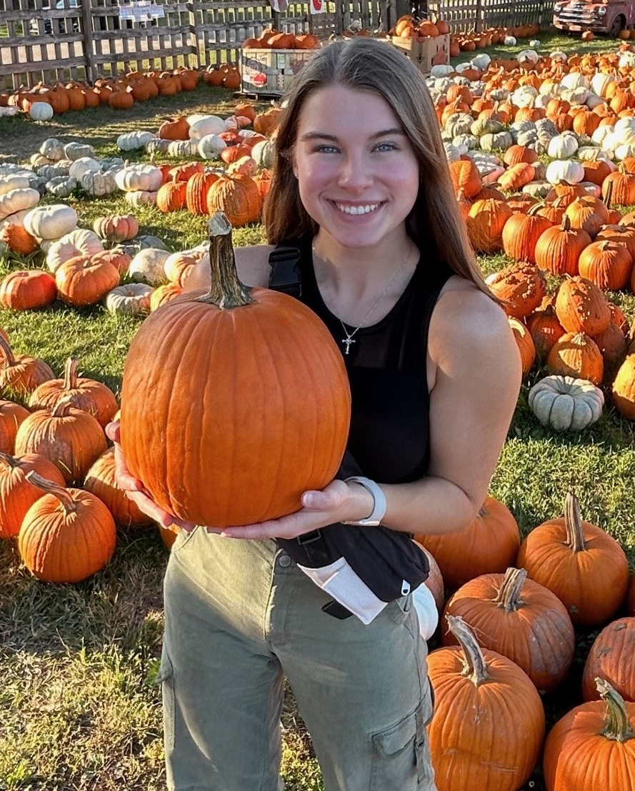
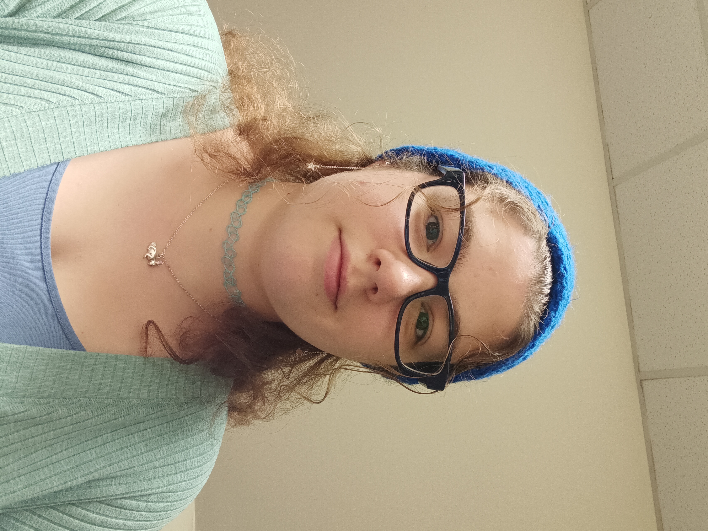
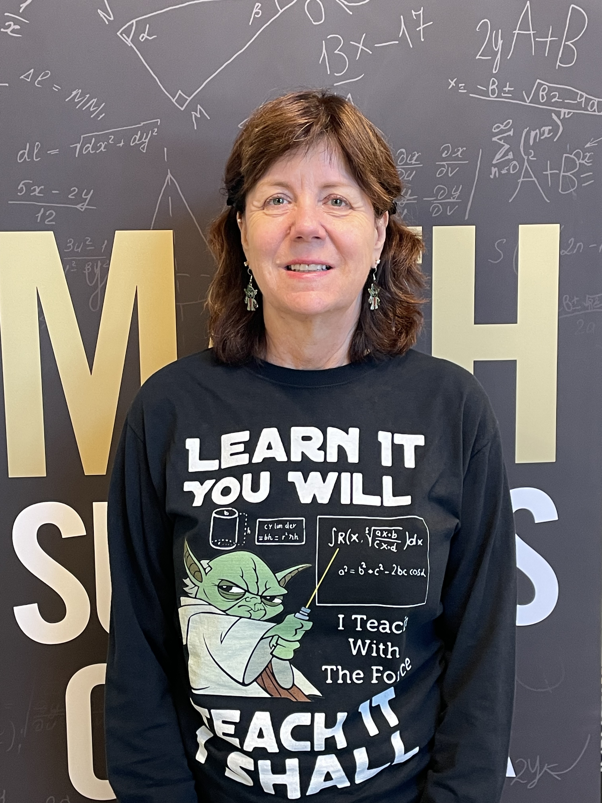
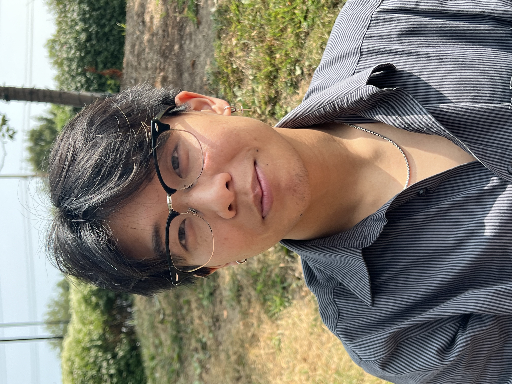

Brooke
- Status/Year: Student, Senior
- Major: Mathematics (BS) with emphasis in Actuarial Science | Minor: Spanish
- Hometown: Bloomington, Illinois
- Favorite math course: Financial Theory of Mathematics.
- Favorite thing about math: How it is consistent with concrete answers.
- Fun fact: I have taken 10 years of piano lessons.

Mattie
- Status/Year: Student, Senior
- Major: Computer Science | Minor: Data Science
- Hometown: St. Louis, Missouri
- Favorite math course: Calculus
- Favorite thing about math: The problem-solving aspect and the satisfaction/accomplishment you feel when completing a difficult problem!
- Fun fact: I play on the wommen's soccer team here at Lindenwood!
Seth
- Status/Year: Student, Junior
- Major: Computer Science (BS) & Mathematics (BS) with Research Emphasis
- Hometown: St. Charles, Missouri
- Favorite math course: Linear Algebra
- Favorite thing about math: Solving unique and challenging problems.
- Fun fact: I love music. A few of my favorit artists are "My Chemical Romance," "Pink Floyd," and "Playboi Carti."

Katherine
- Status/Year: Student, Junior
- Major: Mathematics for Secondary Education with an unoffical add-on of a certification in middle school education
- Hometown: Originally from St. Ann, Missouri
- Favorite math course: Algebra.
- Favorite thing about math: I get to simplify fractions.
- Fun fact: I love to knit and crochet.

Dr. J (Jeevanjee)
- Status/Year: Retired professor, currently a volunteer tutor
- Major: Double majored in Mathematics and Computer Science. Obtained master and PhD in Mathematics.
- Hometown: Borned in Munich, Germany due to dad in the army. Have been in St. Louis for 30 years - it feels like my "home town."
- Favorite math course: I love all the math courses. If I have to pick one, Abstract Algbera.
- Favorite thing about math: I love math for how it is logical.
- Fun fact: I'm equally left (math) and right (creative) brained. I draw and paint.

Bennett
- Status/Year: Student, Senior
- Major: Mathematics, Computer Science, and Data Science.
- Hometown: Palmyra, Missouri
- Favorite math course: Machine learning.
- Favorite thing about math: I like math because it isn't writing.
- Fun fact: I am on the Lindenwood baseball team.

Kevin
- Status/Year: Student, Senior
- Major: Computer Science (BS) | Minor: Mathematics
- Hometown: Borned in Brooklyn, New York. Currently from Winfield, Missouri
- Favorite math course: College algebra as it establishes the foundation and langauge for all upper math courses.
- Favorite thing about math: I enjoy the preciseness nature of math and find it remarkable how it can model anything around us.
- Fun fact: I can solve a 3x3 Rubik's Cube with a personal best time of under 30 seconds.
Jamie (Still gathering content)
- Status/Year: Student
- Major: ...
- Hometown: ...
- Favorite math course: ...
- Favorite thing about math: ...
- Fun fact: ...